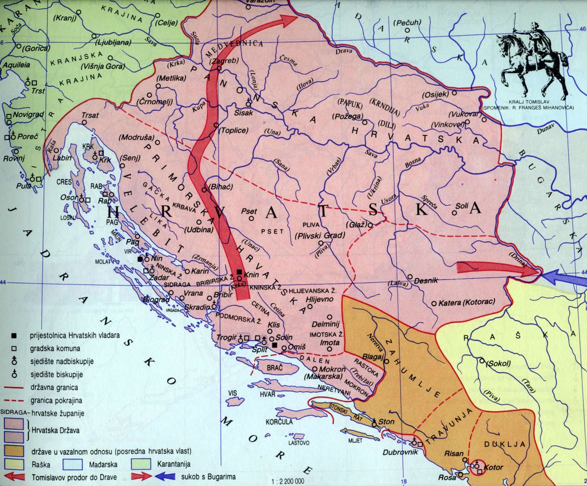

kralj Stjepan Držislav

O kralju
On je vratio hrvatskoj izgubljena područja i njegova međunarodna djelovanja su vratila Hrvatskoj izgubljen ugled
Njegova žena je bila kraljica Jelena. Ona je u Solinu dala sagraditi crkvu sv. Stjepana i crkvu sv. Marije na Gospinu otoku, grobnicu hrvatskih kraljeva i krunidbenu baziliku.
Dao je Bizantu potporu kada je makedonski velikaš Samulio ugrozio Bizant. Za tu iskazanu jernost bizantski car Bazilije II. mu povjerava Dalmaciju, šalje znakove kraljevske časti, titulu eparha i patricija te mu prizanje gospodstvo nad Kraljevstvom Hrvatske i Dalmacije.
Tako je on prvi hrvatski vladar koji je primio znakove kraljevske vlasti
Za vrijeme kralja Tomislava
Promjene u teritoriju
Za doba kralja Miroslava hrvatska je izgubila dosta teritorija, Venecija je neuspješno pokušala osovojiti dio Neretvane, ali srbski knez je uspio osvojiti dio Bosne i Neretvanske kneževine.
Zbog toga Stjepanovo proširenje je većinom bilo vraćanje starog i to je i uspio.
Također zbog pomoći koju je dao Bizantu, Bazilije II. mu povjerava Dalmaciju.